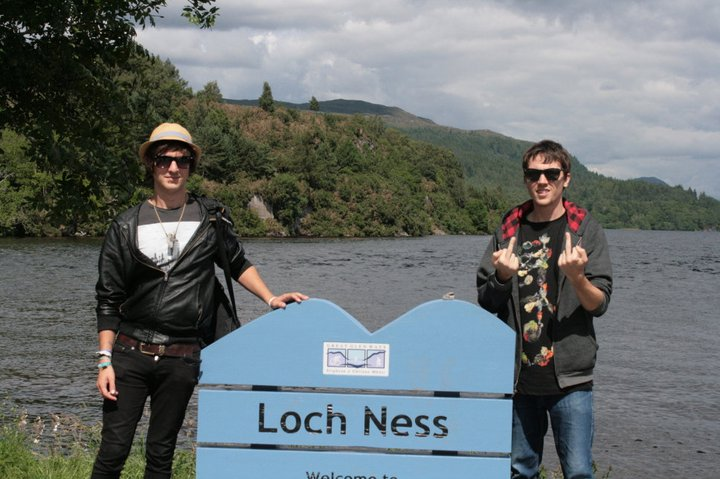

Loch Ness
What to See
Loch Ness offers breathtaking natural beauty and intriguing legends. Key attractions include Urquhart Castle, the Loch Ness Centre and Exhibition, boat tours on the loch, the Dores Inn, and the Loch Ness viewpoint.
A Brief History of the City
While Loch Ness itself isn't a city, the surrounding area is steeped in history. Urquhart Castle, overlooking the loch, has a history dating back to the 13th century and has witnessed numerous historical events and battles.
Top 10 Attractions
- Urquhart Castle
- Loch Ness Centre and Exhibition
- Boat Tours on Loch Ness
- Dores Inn
- Loch Ness Viewpoint
- Glen Affric
- Fort Augustus
- Drumnadrochit
- Loch Ness Whale and Dolphin Centre
- Great Glen Way
What to Bring
- Comfortable walking shoes
- Weather-appropriate clothing
- Camera or smartphone for photos
- Guidebook or map
- Travel adapter (Type G socket)
- Reusable water bottle
- Personal medications
- Sun protection (sunscreen, hat, sunglasses)
- Light jacket for cooler evenings
- Umbrella or raincoat
Currency
The currency in Loch Ness (Scotland) is the British Pound Sterling (£).
Best Time to Visit
Spring (April to June) and Autumn (September to October) offer pleasant weather and beautiful scenery. Summer is ideal for boat tours and outdoor activities, while winter provides a serene, snowy landscape.
Fun Facts
- Loch Ness is the second-largest freshwater loch by surface area in Scotland.
- The legend of the Loch Ness Monster, affectionately known as "Nessie," dates back to ancient times.
- Urquhart Castle has been featured in numerous films and TV shows due to its dramatic setting.
- Loch Ness is part of the Great Glen, a series of glens that run through Scotland.
- The loch is approximately 36 kilometers long and up to 230 meters deep.